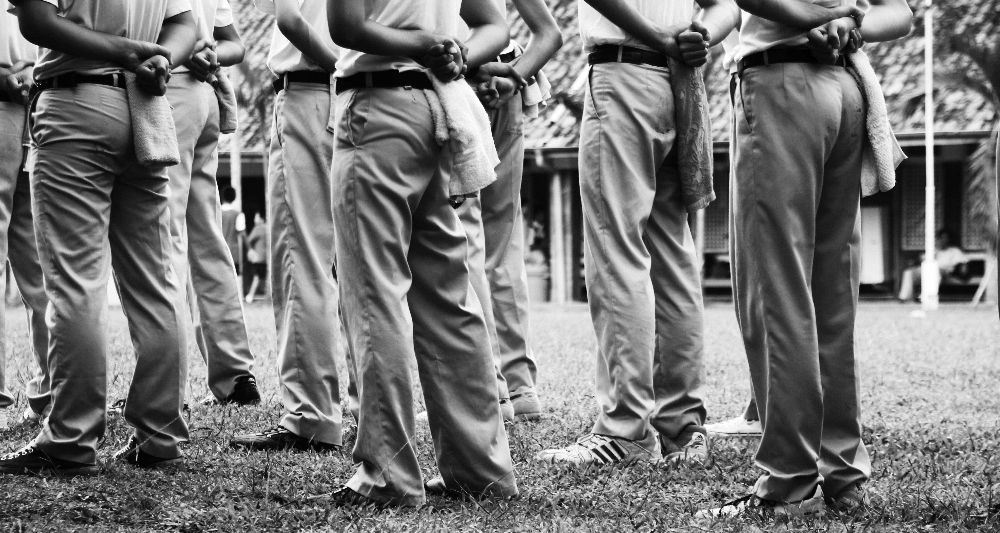

1. Putih Abu Abu

Angga. Angga Ferliado. Begitulah dulu mereka memanggil gw, dalam keseharian kehidupan Sekolah Menengah Atas atau yang biasa dikenal sebagai jaman putih abu-abu. Dulu? Iya, itu udah dulu karena sekarang gw pindah sekolah setelah gw bermasalah dengan sekolah gw yang lama. Bagi gw sendiri sih bukan masalah yang besar, cuma.. ngga naik kelas kok. Maklum dong orang ngga naik kelas? Menurut gw sekarang itu ngga naik kelas udah bukan kayak nyariin jarum di serumpun padi, tapi kayak nyariin kerang dipinggiran pantai yang jumlahnya juga banyak. Jadi harap dimaklumkan deh.Sebenernya kalo mau jujur sih, gw bukan orang yang bego banget kok. Matematika masih dapet nilai 70, walaupun Fisika gw cuma dapet 60. Harusnya sih kan masih bisa selamet buat ujian nanti. Eh iya, gw belom bilang kalo gw harusnya sekarang duduk di bangku kelas 2 SMA. Tapi ya karena gw ngga naik kelas, ngulang lagi deh yang namanya duduk di bangku kelas 1 SMA.
Mungkin lu semua bingung dengan pernyataan gw tadi. Biasanya kan orang ngga naik kelas terus pindah sekolah jadi naik, tapi ini beda dengan kasus gw. Bedanya disini nih, bukan keinginan gw untuk pindah sekolah tapi orangtua gw merasa malu kalo anaknya ngga naik kelas. So, gw akhirnya dipindahin deh.
Lanjut cerita gw yang tadi, harusnya gw sih masih bisa masuk kelas IPS dibandingin gw ngga naik kayak sekarang ini. Tapi itu mungkin juga karena guru-guru mempertimbangkan kelakuan gw yang katanya sih ngga baik. Seinget gw, pernah sih sekali kejadian yang bikin sekolah gw rada heboh. Ada murid sekolah lain mampir ke sekolah gw, tapi kelakuannya mancing emosi. Anak sok tajir gitu deh, yang akhirnya bikin gw berantem sama itu anak. Oke, begitulah kelakuan seorang anak yang dulu dipanggil Angga.
Sekarang gw lagi memasuki dunia baru gw. Dunia kelas 1 SMA dengan sekolah yang baru. Gw bahkan ngga punya gambaran di sekolah gw yang baru ini. Yang pasti gw masih berada di salah satu sekolah di Jakarta ini. Baru aja gw melangkah masuk pintu sekolah, ada satu orang yang tampangnya berbahaya banget nih. Seragamnya udah kayak polisi, tapi gayanya udah kayak maling yang lagi nyari mangsa.
Darius Siswantoro. Begitulah nama yang gw liat di nametagnya. Dia pasti kepala sekolah gw. Bukannya sok tau, tapi dia berdiri di depan Ruang Kepala Sekolah. Ditambah lagi semua murid terlihat hormat banget sama ini orang. Tapi karena gw adalah seorang yang cuek dan ngga peduli sama yang namanya pangkatan, gw dengan santainya nanya dimana lokasi kelas G. Itulah kelas yang gw dapetin saat gw liat nama gw tercantum di daftar kelas G. Semoga G yang dimaksud bukan kelas "Goblok" deh. Setelah gw tanya itu, gw malah dibentak sama orang dengan nametag Darius itu.
"Kamu udah SMA bisa nyari kelas sendiri ngga sih !?"
Sewot bener ini orang. Tapi buat ngejaga kesopanan gw, dengan nahan emosi gw cuma ngangguk-ngangguk aja.
Masalah yang udah berlalu, biarkanlah berlalu. Prinsip itu yang gw pegang. Sebenernya bukan gw pegang sih, prinsip itu baru aja muncul di otak gw untuk masalah yang satu ini. Prinsip yang gw pegang cuma satu kata, yaitu ‘simpel’. Iya, bagi gw satu kata itu udah bisa jadi prinsip buat semuanya. Misalnya aja kayak dikasi pr, hal yang paling simpel yang bisa gw buat adalah ga bikin ato mungkin nyalin temen di sekolah kalo lagi niat aja.
Kelas A, bukan. Kelas B, bukan juga. Kelas C, bukan juga kelas gw. Kelas D, bukan juga bagian kelas gw. Kelas E, bukan juga bagian kelas gw buat sekolah ini. Kelas F, daritadi gw berjalan bukan juga bagian kelas gw buat sekolah ini. Kelas G, nah ini baru kelas gw. Ternyata kelas gw ini paling ujung dari semua kelas.
Berharap untuk dapet kelas yang bisa membimbing gw menjadi orang yang lebih baik dengan masa depan yang lebih cerah sedikit deh. Walaupun mungkin cuma secercah cahaya yang masuk di siang hari ngelewatin kardus bolong dengan diameter 1 cm. Harapan ngga sesuai kenyataan. Pertama kali gw ngeliat kelas gw sendiri, yang gw temuin adalah beberapa anak-anak veteran dengan gaya premannya sok berkuasa di kelas G ini.
"Halo, nama gw Rani. Anak baru ya?"
Suara itu terdengar saat gw baru aja mau masuk ke kelas G ini. Anak cewe yang satu ini gw rasa cakep juga, boleh juga deh kenalan. Apalagi dia yang minta, kalo ada kesempatan gini nih ngga boleh dilewatin bro.
"Hey, nama gw Angga Ferliado. Panggil aja Angga."
Kalo mau kenalan sama cewe itu harus dengan suara lantang dan PD tinggi. Baru aja selesai memperkenalkan diri, tiba-tiba aja si anak veteran bergaya preman itu dateng menghampiri gw. "Siapa lo deket-deketin cewe gw!?"
"Jo, udahlah. Jangan nyari ribut sama orang. Lagian kita kan udah putus."
Astaga deh, padahal cewe ini juga yang minta kenalan. Tangan gw udah mau mukul dia, tapi untungnya mendadak cewe itu ngomong begitu. Setelah itu Rani ngajak gw jalan keluar kelas untuk menenangkan emosi gw yang sempet melonjak sampe kayak termometer yang udah menyentuh titik maksimal seratus derajat celcius.
Rani terdiam beberapa saat sebelom ngomong gini sama gw.
"Anak tadi itu namanya Joshua. Mantan pacar gw dari waktu gw masih duduk di bangku SMP. Dulunya kakak kelas, tapi karena ngga naik kelas jadi satu tingkat sama kita sekarang ini deh. Sorry ya lu jadi terlibat masalah ini."
"Oh, ngga apa-apa kok. Udah biasa gw."
"Udah biasa gimana maksudnya?", tanya Rani dengan cepat.
Aduh, kayaknya gw salah ngomong nih. Bisa-bisa dikira gw itu anak yang suka nyari ribut. Tapi untung aja otak gw lagi berpikir cepet, jadi gw langsung jawab aja.
"Maksud gw, udah sering gw diteken sama orang-orang jahat begini."
Kringgggg. Bel berbunyi cukup keras, sampe-sampe gw kaget. Gw kira ada kebakaran ato apa gitu, beda banget sama bel di sekolah gw yang lama.
Masuk ke kelas pelajaran pertama. Hmm, sebenernya belom pelajaran sih, masih perkenalan layaknya murid baru semua. Walaupun ada si anak preman itu. Rani duduk 3 bangku di depan gw. Posisi gw lumayan bagus buat selalu memperhatikan dia. Belom lewat setengah detik dari gw mikir itu, ternyata Joshua duduk di sebelah Rani.
Segala pemikiran negatif yang bakal terjadi masuk ke otak gw. Tiba-tiba Joshua menghampiri Rani dan ngegodain dia. Rani juga keliatan ngga nyaman dengan tingkah laku Joshua ini. Emosi gw memuncak lagi, tanpa pikir panjang gw maju dan langsung mukul Joshua sekuat tenaga. Perkelahian ngga bisa dilewatin, gw akhirnya bener-bener ribut sama Joshua. Ngga terima dengan perlakuan gw, Joshua juga langsung bales pukulan gw. Guru yang baru masuk negur gw sama Joshua. Merasa ini baru hari pertama sekolah, gw dan Joshua ngga dikirim ke kepala sekolah. Gw dan Joshua disuruh keluar kelas sebagai hukumannya. Gw dihukum di depan kelas, sedangkan Joshua dihukum di kantin.
Pelajaran kedua dimulai. Tapi sekarang tempat duduk gw dan Joshua dipindahin, dari ujung sampe ujung kelas. Udah kayak pertempuran blok timur sama blok barat pas perang dunia. Rani terlihat kecewa dengan kelakuan gw, tapi ya mau apa lagi? Emosi gw emang cepet naik, apalagi kalo ngeliat cewe dipermainkan kayak begitu.
Muka gw dah cemberut aja tuh sampe pulang sekolah. Baru keluar kelas, Rani tiba-tiba langsung narik tangan gw. Begitu sampe gerbang sekolah, dia bilang, "Thanks udah ngebelain gw, tapi.. ah, nevermind deh. Gw ngga mau aja kalo temen gw harus berurusan sama dia." Gw Cuma ngangguk-ngangguk aja. Terus ngga lama, dia langsung lari. Ternyata dia udah di jemput sama bokapnya.
Abis itu, gw langsung balik ke parkiran. Bertemu dengan motor kesayangan gw, yang warnanya hitam itu. Ga mampir kemana-mana, gw langsung balik ke rumah. Hari pertama di sekolah baru. Kesimpulan gw: RIBUT.